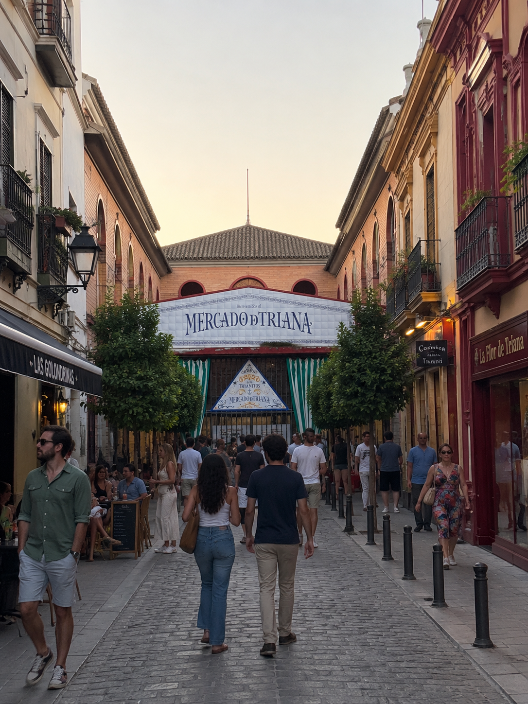
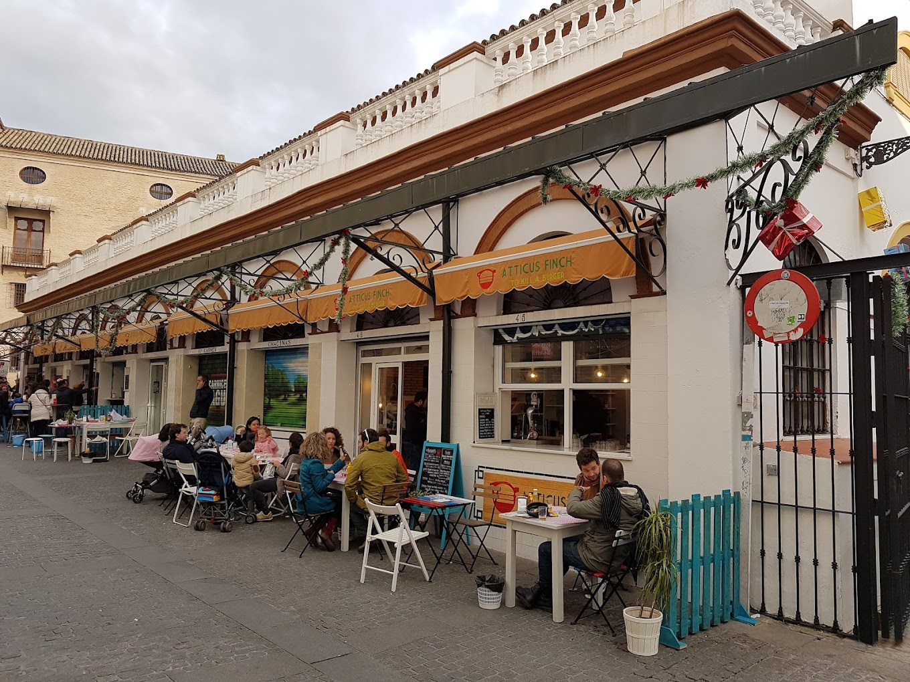
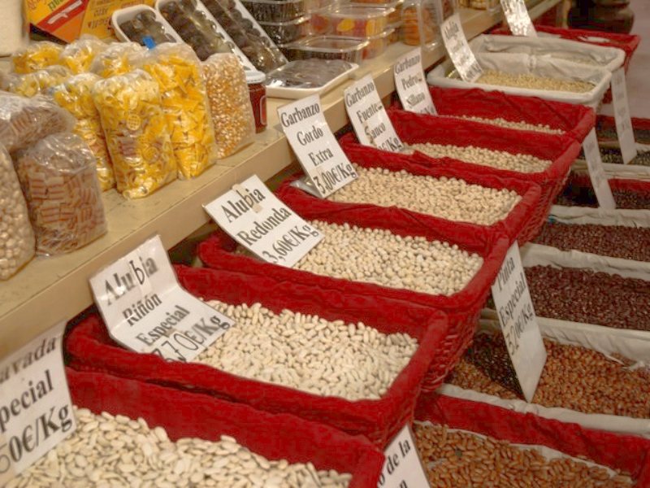
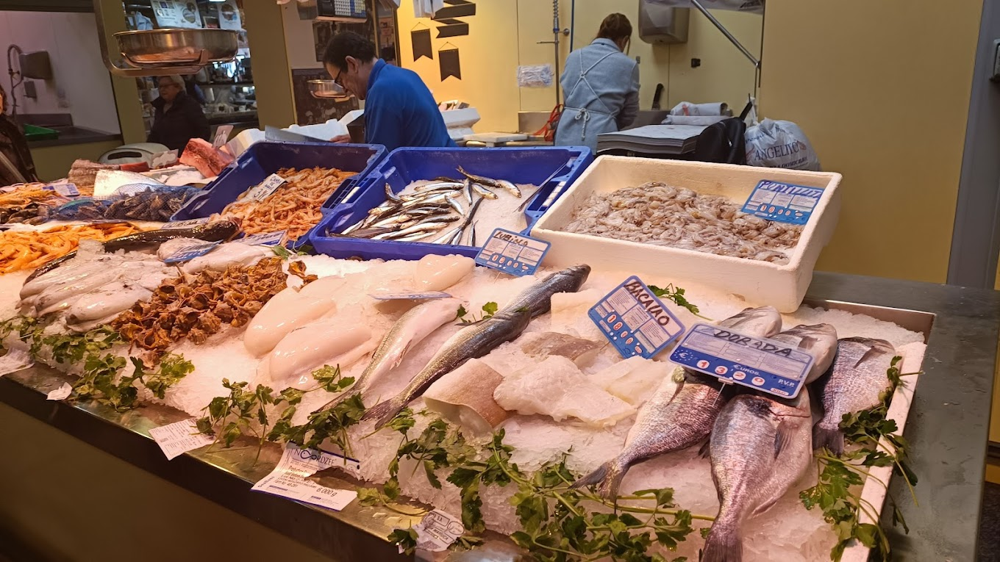
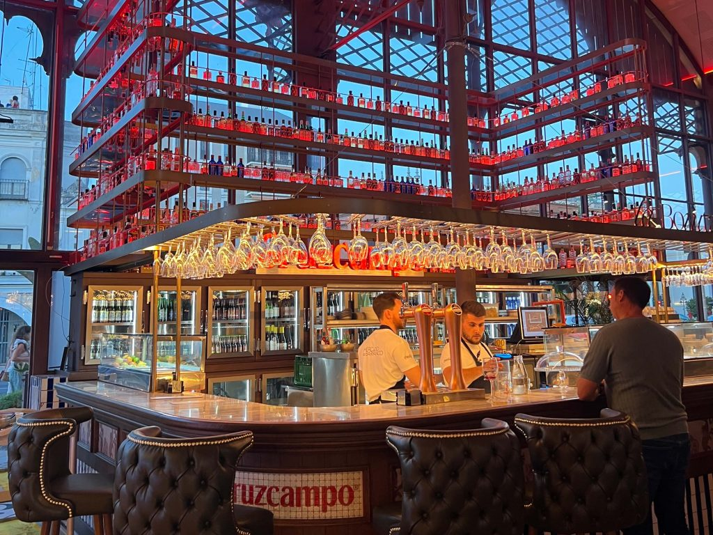
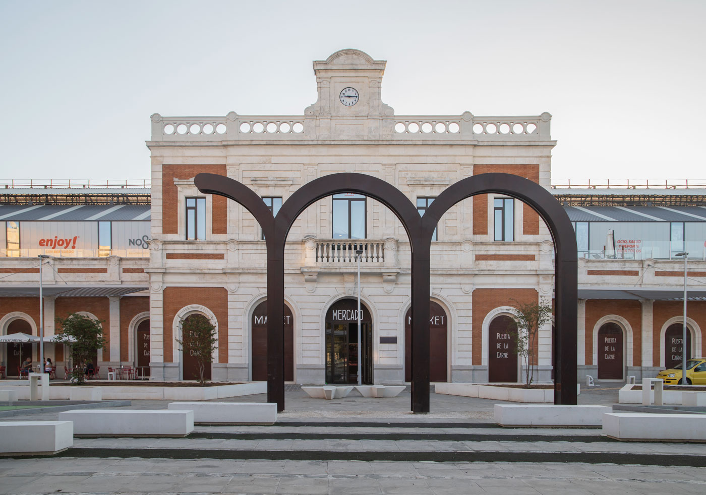
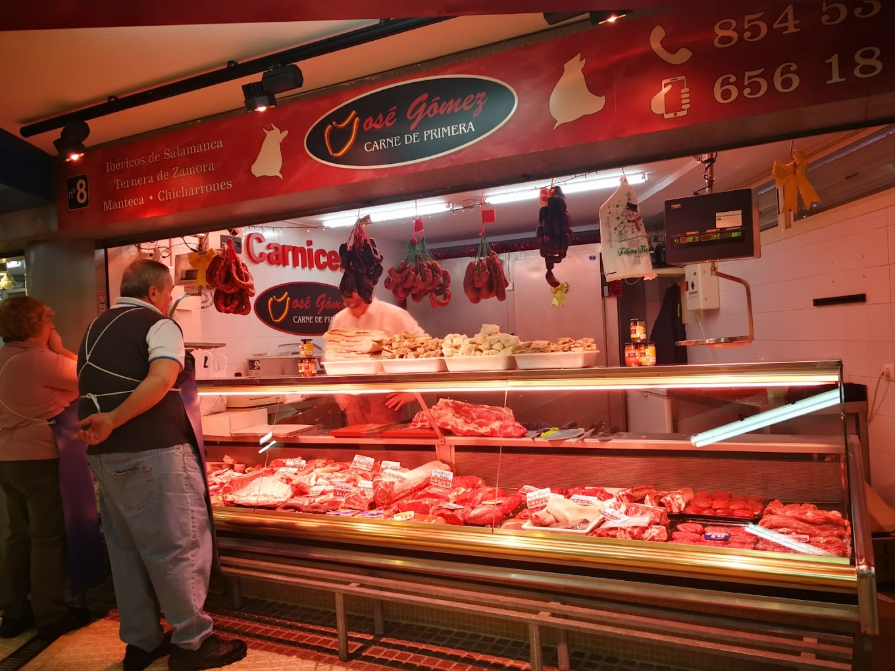

If you want to understand a city, go to its market.
Seville's food markets are where people here actually shop — not a set for photographs. Each has its own character, its own neighbourhood and its own reason to go, and a couple of them are barely visited by anyone who does not live nearby.
These are our favourites, and what each one is good for.
In short
- —Go early. The markets are at their best before the middle of the morning, and many stalls close by two.
- —Most stalls prefer cash, particularly for small purchases.
- —Triana and Feria are the two to see if you only have time for two.
- —Lonja del Barranco is a gourmet market for eating and drinking, not for shopping.
01
Mercado de Triana
Built on the ruins of the old Castillo de San Jorge, this is our favourite market in the city. Inside there is a cooking school, a small theatre, and stalls selling everything from fresh fish to Iberian ham — a combination of history, culture and food in the heart of Triana.
It is also the market we use on our own tapas tour, because you can taste your way across it and then cross the bridge into the old town.

02
Mercado de la Feria
Seville's oldest market, with roots going back to the thirteenth century. It sits in the lively Macarena quarter, well away from the tourist routes, and is one of the most authentic places to see how Sevillians really buy their food.

03
Mercado del Arenal
Right beside the Maestranza bullring, with a long history as a fish market. Today it mixes traditional stalls with places to sit down for a quick tapa or a glass of wine in the middle of the shopping.

04
Mercado de la Encarnación (Las Setas)
Underneath the Setas de Sevilla — the great timber structure in the centre — is a modernised market with both traditional stalls and roomier places to eat. Its position makes it a natural stop in the middle of a day's sightseeing.

05
Lonja del Barranco
A gourmet market on the riverbank, in a nineteenth-century iron building designed by Gustave Eiffel's team. The atmosphere is more modern and more social than the traditional markets — the right place for a drink and something to eat as the sun goes down over the Guadalquivir.

06
Mercado Puerta de la Carne
One of the city's oldest market sites, restored and reopened in a handsome historic building near Santa Cruz. It combines traditional stalls with a good choice of places to eat, and makes a good stop after a walk through the old town.

07
Mercado de Los Remedios
A neighbourhood market in the well-to-do Los Remedios district, visited by far fewer outsiders than the rest. This is where Sevillians buy what they need for dinner — meat, fish and fresh vegetables, with no show attached, just good quality.

08
Visiting the markets
Go early in the morning to see a market at its most genuine, before the visitors arrive and while the produce is at its freshest. Most stalls take only cash for smaller purchases, so carry some.
And do not be shy. Pointing, tasting and asking are a normal part of market culture in Seville — the stallholders expect it, and it is how you find the good things.
Which market to choose
If you have time for one, make it Triana: it has the history, the range and the best mix of stalls and places to eat. If you have time for two, add Feria for the version with no visitors in it at all.
Encarnación and Puerta de la Carne suit a break in the middle of sightseeing. Lonja del Barranco is an evening rather than a shopping trip. Los Remedios is for anyone who wants to see the ordinary version of all this.
The markets are where Seville is still Seville — people buying food for dinner as they have done for generations. We build our tapas tour around that, and can shape a market morning around whatever you most want to taste.
Frequently asked questions
{{ f.q }}+
{{ f.a }}

Written by
Gunvor Guttormsen
Licensed tour guide · Seville
Gunvor is an officially licensed guide based in Seville and the founder of Flavors of Andalucia. She guides in English and Norwegian, and also in Swedish and Danish, and has spent years walking the markets, bodegas and back streets she writes about here.
More about Gunvor